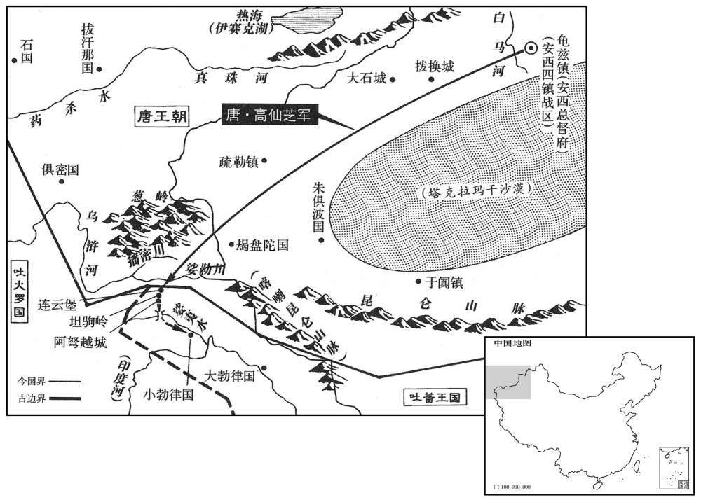

公元747年资治通鉴：本年记事、原文与白话对照
按原书编年位置阅读；追叙和史论不等于本年发生的事件。白话采用所据译本，缺译不以生成译文补齐。
卷215 · 本年记事
公元747年 · 唐玄宗至道大圣大明孝皇帝天宝六载
六载〔（丁亥、七四七）〕
上传原文的注释括号有异常，字符原样保留；无法可靠划分的段落默认全文显示。
本年记事分属相邻卷，按原书顺序分别保留：第215卷 · 第216卷。
本年事件索引（现代整理）
- 李邕、裴敦复被杖杀
- 罗希奭奉命处死皇甫惟明、韦坚等
- 李林甫追查韦坚罪案株连船工百姓
- 玄宗祭祀后免田租并改死刑为流放
- 李林甫阻挠天下士人入京应试
- 安禄山兼任御史大夫
- 安禄山以贿赂朝廷耳目窥探政情
- 安禄山假称不知太子而更受玄宗宠信
- 王忠嗣识破安禄山借边防留兵图谋
- 温泉宫改名华清宫
- 哥舒翰击退吐蕃，夺回积石军麦田
- 王忠嗣反对强攻石堡城
- 李光弼劝王忠嗣以财帛消除谗言
- 李林甫诬告王忠嗣拥兵谋立太子
- 哥舒翰任陇右节度使
- 李林甫忌恨杨慎矜
- 杨慎矜因术士及谶书受玄宗猜忌
- 王鉷诬告杨慎矜谋复隋朝
- 吉温诱骗史敬忠作伪证
- 杨慎矜及兄弟被赐死
- 哥舒翰替王忠嗣求情使其免死
- 李林甫设狱株连数百家并加害东宫
- 征发民夫修筑会昌城
- 天下岁贡尽数赐给李林甫
- 李林甫之子忧其权势招祸
- 李林甫以重兵仪卫防范刺客
- 高仙芝因勇武获升安西副都护
- 高仙芝攻破连云堡
- 高仙芝诈称阿弩越城归唐以鼓舞士卒
- 高仙芝擒获小勃律大臣
- 高仙芝命人斫断通往吐蕃的藤桥
- 高仙芝俘获小勃律王及吐蕃公主
- 夫蒙灵詧因高仙芝越级报捷而责骂他

本年形势与背景参考图
春，正月，辛巳。李邕、裴敦复皆杖死。邕才艺出众，卢藏用常语之曰：「君如干将、莫邪，〔语，牛倨翻。干将、莫邪，吴王所铸宝剑。〕难与争锋，然终虞缺折耳。」〔折，而设翻。〕邕不能用。
本段缺少可靠对应白话，原文完整保留；未使用生成译文。
林甫又奏分遣御史即贬所赐皇甫惟明、韦坚兄弟等死。罗希奭自青州如岭南，所过杀迁嫡者，〔希奭既杀李邕于青州，遂如岭南也。〕郡县惶骇。排马牒至宜春，〔御史所过，沿路郡县给驿马，故未至先有排马牒。〕李适之忧惧，仰药自杀。至江华，王琚仰药不死，闻希奭已至，即自缢。希奭又迂路过安陆，欲怖杀裴宽，〔怖，普布翻。〕宽向希奭叩头祈生，希奭不宿而过，乃得免。李适之子霅迎父丧至东京，李林甫令人诬告霅，杖死于河南府。给事中房管坐与适之善，贬宜春太守。管，融之子也。〔房融见二百七卷武后长安四年。
本段缺少可靠对应白话，原文完整保留；未使用生成译文。
林甫恨韦坚不已，遣使于循河及江、淮州县求坚罪，〔使，疏吏翻。〕收〔【章：十二行本「收」上有「所在」二字；乙十一行本同；张校同。】〕系纲典船夫，溢于牢狱，〔十船为一纲。以吏为纲典船夫，挽船及驾船之夫也。〕征剥逋负，延及邻伍，皆裸露死于公府，〔裸，郎果翻。〕至林甫薨乃死。
本段缺少可靠对应白话，原文完整保留；未使用生成译文。
丁亥，上享太庙；戊子，合祭天地于南郊，赦天下。制免百姓今载田租。又令削绫、斩条。上慕好生之名，故令应绞斩者重杖流岭南，其实有司率杖杀之。又令天下为嫁母服三载。〔载，子亥翻。好，呼到翻。皆为，于伪翻；下即为同。〕
本段缺少可靠对应白话，原文完整保留；未使用生成译文。
上欲广求天下之士，命通一艺以上诣京师。李林甫恐草野之士对策斥言其奸恶，建言：「举人多卑贱愚聩，〔聩，五怪翻。〕恐有俚言污浊圣听。」乃令郡县长官精加试练，灼然超绝者，具名送省，委尚书覆试，御史中丞监之，〔监，古衔翻。〕取名实相副者闻奏。既而至者皆试以诗、赋、论，遂无一人及第者。林甫乃上表贺也无遗贤。
本段缺少可靠对应白话，原文完整保留；未使用生成译文。
戊寅，以范阳、平卢节度使安禄山兼御史大夫。
本段缺少可靠对应白话，原文完整保留；未使用生成译文。
禄山体充肥，腹垂过膝，尝自称腹〔【章：十二行本无「腹」字；乙十一行本同。】〕重三百斤。外若痴直，内实狡黠。常令其将刘骆谷留京师诇朝廷指趣，动静皆报之；〔黠，下八翻。诇，翾正翻，有所候伺也。〕或应有笺表者，骆谷即为代作通之。岁献俘虏、杂畜、奇禽、异兽、珍玩之物，〔畜，许救翻。〕不绝于路，郡县疲于递运。
本段缺少可靠对应白话，原文完整保留；未使用生成译文。
禄山在上前，应对敏给，杂以诙谐，上尝戏指其腹曰：「此胡腹中何所有﹖其大乃尔！」对曰：「更无余物，正有赤心耳！」上悦。又尝命见太子，禄山不拜。左右趣之拜，〔趣，读曰促。〕禄山拱立曰：「臣胡人，不习朝仪，不知太子者何官﹖」〔朝，直遥翻。〕上曰：「此储君也，朕千秋万岁后，代朕君汝者也。」禄山曰：「臣愚，向者惟知有陛下一人，不知乃更有储君。」不得已，然后拜。上以为信然，益爱之。上尝宴勤政楼，百官列坐楼下，独为禄山于御座东间设金鸡障，〔障，坐障也，画金鸡为饰。为，于伪翻。〕置榻使坐其前，仍命卷帘以示荣宠。〔卷，读曰卷。〕命杨铦、杨锜、贵妃三姊皆与禄山鈙兄弟。禄山得出入禁中，因请为贵妃儿。上与贵妃共坐，禄山先拜贵妃。上问何故，对曰：「胡人先母儿后父。」上悦。
本段缺少可靠对应白话，原文完整保留；未使用生成译文。
李林甫以王忠嗣功名日盛，恐其入相，〔相，息亮翻。〕忌之。安禄山潜蓄异志，托以御寇，筑雄武城，〔蓟州广汉川有雄武军。〕大贮兵器，〔贮，丁吕翻。〕请忠嗣助役，因欲留其兵。忠嗣先期而往，不见禄山而还，数上言禄山必反；林甫益恶之。〔为王忠嗣得罪张本。先，悉荐翻。数，所角翻。上，时掌翻。恶，乌路翻。〕夏，四月，忠嗣固辞兼河东、朔方节度，许之。
本段缺少可靠对应白话，原文完整保留；未使用生成译文。
冬，十月，己酉，上幸骊山温泉，〔考异曰：旧纪、唐历皆作「戊申」，今从之。〕改温泉宫曰华清宫。
本段缺少可靠对应白话，原文完整保留；未使用生成译文。
河西、陇右节度使王忠嗣以部将哥舒翰为大斗军副使，李光弼为河西兵马使、充赤水军使。〔兵马使，节镇衙前军职也，总兵权，任甚重。至德以后，都知兵马使率为藩镇储帅。将，即亮翻。使，疏吏翻。〕翰父祖本突骑施别部酋长，〔西突厥五弩失毕有哥舒阙俟斤。骑，奇寄翻。酋，慈由翻。长，知两翻。〕光弼，契丹王楷洛之子也，〔开元初，李楷洛封为契丹王。〕皆以勇略为忠嗣所重。忠嗣使翰击吐蕃，有同列为之副，倨慢不为用，翰檛杀之，军中股栗，〔檛，则瓜翻。〕累功至陇右节度副使。每岁积石军麦熟，吐蕃辄来获之，〔获，户郭翻。〕无能御者，边人谓之「吐蕃麦庄」。翰先伏兵于其侧，虏至，断其后，夹击之，〔断，音短。〕无一人得返者，自是不敢来。〔复，扶又翻。〕
本段缺少可靠对应白话，原文完整保留；未使用生成译文。
上欲使王忠嗣攻吐蕃石堡城，〔石堡城陷，见上卷开元二十九年。〕忠嗣上言：「石堡险固，吐蕃举国守之，今顿兵其下，非杀数万人不能克；臣恐所得不如所亡，不如且厉兵秣马，俟其有衅，然后取之。」上意不快。将军董延光自请将兵取石堡城，〔请将，即亮翻。〕上命忠嗣分兵助之。忠嗣不得已奉诏，而不尽副延光所欲，延光怨之。
本段缺少可靠对应白话，原文完整保留；未使用生成译文。
李光弼言于忠嗣曰：「大夫以爱士卒之故，不欲成延光之功，〔唐中世以前，率呼将帅为大夫，白居易诗所谓「五官称大夫」是也。〕虽迫于制书，实夺其谋也。何以知之﹖今以数万众授之而不立重赏，士卒安肯为之尽力呼！〔为，于伪翻。〕然此天子意也，彼无功，必归罪于大夫。大夫军府充牣，何爱数万段帛不以杜其谗口呼！」忠嗣曰：「今以数万之众争一城，得之未足以制敌，不得亦无害于国，故忠嗣不欲为之。忠嗣今受责，天子不过以金吾、羽林一将军归宿卫，其次不过黔中上佐；〔黔中一道皆溪峒蛮、傜杂居，贬谪而不过岭者处之。上佐，长史、司马也。黔，琴。〕忠嗣岂以数万人之命易一官呼！李将军，子诚爱我矣，然吾志决矣，子勿复言。」光弼曰：「向者恐为大夫之累，〔复，扶又翻。累，力瑞翻。〕故不敢言。今大夫能行古人之事，非光弼所及也。」遂趋出。
本段缺少可靠对应白话，原文完整保留；未使用生成译文。
延光过期不克，言忠嗣沮挠军计，〔沮，在吕翻。挠，女教翻。〕上怒。李林甫因使济阳别驾魏林告「忠嗣尝自言我幼养宫中，与忠王相爱狎」，〔武德四年，分东平之卢县置济州，隋之济北郡也，天宝元年改曰济阳郡。忠嗣年九岁，父海宾战死于渭源长城堡，帝养忠嗣宫中，太子时为忠王，与之游处。魏林先为朔州刺史。忠嗣节度河东，朔州其巡属也，故使林谮之，以示言有所自来。济，子礼翻。〕欲拥兵以尊奉太子。敕征忠嗣入朝，〔朝，直遥翻。〕委三司鞫之。
本段缺少可靠对应白话，原文完整保留；未使用生成译文。
上闻哥舒翰名，召见华清宫，〔见，贤遍翻。〕与语，悦之。十一月，辛卯，以翰判西平太守，充陇右节度使；以朔方节度使安思顺判武威郡事，充河西节度使。〔西平郡，鄯州。武威郡，凉州。〕
本段缺少可靠对应白话，原文完整保留；未使用生成译文。
户部侍郎兼御史中丞杨慎矜为上所厚，李林甫浸忌之。慎矜与王鉷父晋，中表兄弟也，少与鉷狎，〔少，诗照翻。〕鉷之入台，颇因慎矜推〔引。及鉷迁中丞，慎矜与语，犹名之；鉷自恃与林甫善，意稍不平。慎矜夺鉷职田，〔俱为中丞，因并鉷职田夺而有之。〕鉷母本贱，慎矜尝以语人；〔语，牛倨翻。〕鉷深衔之。慎矜犹以故意待之，尝与之私语谶书。〔谶，处谮翻。〕
本段缺少可靠对应白话，原文完整保留；未使用生成译文。
慎矜与术士史敬忠善，敬忠言天下将乱，劝慎矜于临汝山中买庄为避乱之所。〔临汝郡本伊州襄城郡，贞观八年更伊州曰汝州，天宝元年更郡名为临汝郡。〕会慎矜父墓田中草木皆流血，慎矜恶之，〔恶，乌路翻。〕以问敬忠。敬忠请禳之，〔禳，如羊翻。〕设道场于后园，慎矜退朝，辄贯靠梏坐其中。〔朝，直遥翻。，郎果翻。〕旬日血止，慎矜德之。慎矜有侍婢明珠，色美，敬忠屡目之，慎矜即以遗敬忠，车载过贵妃姊柳氏楼下，姊邀敬忠上楼，求车中美人，敬忠不敢拒。明日，姊入宫，以明珠自随。上见而异之，问所从来，明珠具以实对。上以慎矜与术士为妖法，恶之，含怒未发。
本段缺少可靠对应白话，原文完整保留；未使用生成译文。
杨钊以告鉷，鉷心喜，因侮慢慎矜；慎矜怒。林甫知鉷与慎矜有隙，密诱使图之。〔遗，于季翻。上，时掌翻。恶，乌路翻。诱，音酉。考异曰：明皇杂录曰：「慎矜父墓封域之内，草木流血，慎矜大惧，问术者史敬思。敬思曰：『禳之可以免。』于慎矜后园大陈法事，令贯桎梏坐于丛林间以厌之。」唐历云：「敬思本胡人，出家还俗，涉猎书传阴阳玄象；慎矜与之善，每言天下将乱居于临汝山中，亦劝慎汝买得山庄良田十顷。尝于慎矜第夜坐谈宴，怒婢春草，将杖杀之。敬思曰：『七郎何虚杀却十头牛﹖』慎矜曰：『何谓也﹖』敬思曰：『卖却买牛，每年耕田十顷。』慎矜雅厚敬思，曰：『任公收取。』明日至市，卖与太真柳氏姊，得钱百二十千文，买牛以归。柳氏数将春草来往宫中，玄宗见其状貌状大，应对分明，数目之，谓柳曰：『几钱买得此婢﹖』以实对。遂留之。玄宗曾昼寝，问春草曰：『汝本何人﹖何以得至柳家﹖』春草曰：『本杨慎矜婢，卖与柳家。』玄宗曰：『慎矜岂少钱而卖你﹖』春草曰：『不是要钱。本将杀某，敬思救，得不杀，所以卖之。』玄宗素闻敬思名。因诘问。春草以实对曰：『每夜坐中庭，或说天文，遥指宿曜，某亦尽知其言。』玄宗怒，变色良久。后王鉷因奏事言引慎矜，玄宗悖然曰：『慎矜与卿有亲，更不须相往来。』鉷初内怨慎矜凌己，常忍隐不泄，至是觉上意异。杨钊先知之，以告鉷，鉷心喜，数悖慢以侵之；慎矜尤怒。」明皇杂录又曰：「慎矜之侍婢有美者字明珠，敬思数目之，慎矜即以遗之，兼以囊装甚厚，以车送之。敬思乘马随之，路经贵妃妹八姨楼下，方登楼张乐。姨素与敬思相识，固邀敬思登楼，乃曰：『车中美人，请以见遗。』敬思不敢拒。姨明日入宫，婢从。上见而异之，问所从来。明珠曰：『本杨慎矜家人也，近赠史敬思。』上曰：『敬思何人，而慎矜辄赠以婢﹖』明珠乃具言厌胜之式。上大怒曰：『彼为妖乎！』遂告林甫。林甫素忌慎矜才，恐其作相，以告中丞吉温。温险害，亦有憾于慎矜，因构成其事。」今参取书之。〕鉷乃遣人以飞语告「慎矜隋炀帝孙，慎矜，隋炀帝之玄孙。与凶人往来，家有谶书，谋复祖业。」上大怒，收慎矜系狱，命刑部、大理与侍御史杨钊、殿中侍史卢铉同鞫之。太府少卿张瑄，慎矜所荐也，卢铉诬瑄尝与慎矜论谶，拷掠百端，瑄不肯答辩。〔瑄，音宣。掠，音亮。辩者，鞫问之辞，今人谓之问头。〕乃以木缀其足，使人引其枷柄，向前挽之，身加长数尺，腰细欲绝，眼鼻出血，瑄竟不答。
本段缺少可靠对应白话，原文完整保留；未使用生成译文。
又使吉温捕史敬忠于汝州。敬忠与温父素善，温之幼也，敬忠常抱抚之。及捕获，温不与交言，锁其颈，以布蒙首，躯之马前。至戏水，〔戏水在新丰东。戏，许宜翻。〕温使吏诱之曰：「杨慎矜已款服，惟须子一辩，若解人意则生，〔解，户买翻。〕不然必死，前至温汤，则求首不获矣。」〔温汤即谓会昌，时置会昌县于温泉宫下。首，式救翻，，谓自首其事。或曰，首，如字。〕敬忠顾谓温曰：「七郎，求一纸。」温阳不应。去温汤十余里，敬忠祈请哀切，乃于桑下令答三纸，辩皆如温意。温徐谓曰：「丈人且勿怪！」因起拜之。
本段缺少可靠对应白话，原文完整保留；未使用生成译文。
至会昌，〔天宝元年，改骊山曰会昌山。三载，以新丰县去华清宫远，分新丰、万年置会昌县。是年，改温泉曰华清宫，治汤井为池，环山列宫室，又筑罗城，置百司及十宅。〕始鞫慎矜以敬忠为证。慎矜皆引服，惟搜谶书不获。林甫危之，使卢铉入长安搜慎矜家，铉袖谶书入闇中，诟而出曰：『诟，古候翻。〕「逆贼深藏秘记。」至会昌，以示慎矜。慎矜叹曰：「吾不蓄谶书，此何从在吾家哉！吾应死而已。」丁酉，赐慎矜兄少府少监慎余、洛阳令慎名自尽；敬忠杖百，妻子皆流岭南；瑄杖六十，流临封，死于会昌。嗣虢王巨虽不预谋，坐与敬忠相识，解官，南宾安置。〔南宾郡，忠州，本巴郡之临江县，隋义宁二年置临州，贞观八年改忠州，天宝元年改为郡。旧志，忠州，京师南二千一百二十二里。〕自余连坐者数十人。慎名闻敕，神色不变，为书别姊；慎余合掌指天而缢。
本段缺少可靠对应白话，原文完整保留；未使用生成译文。
三司按王忠嗣，上曰：「吾儿居深宫，安得与外人通谋，此必妄也。〔考异曰：新传，李林甫屡白太子宜有谋上云云。按林甫虽志欲害太子，亦未肯自言之。今不取。〕但劾忠嗣沮挠军功。」〔劾，户概翻，又户得翻。沮，在吕翻。挠，奴巧翻，又奴教翻。〕哥舒翰之入朝也，或劝多赍金帛以救忠嗣。翰曰：「若直道尚存，王公必不冤死；如其将丧，〔丧，息浪翻。〕多赂何为！」遂单囊而行。三司奏忠嗣罪当死。翰始遇知于上，力陈忠嗣之冤，且请以己官爵赎忠嗣罪；上起，入禁中，翰叩头随之，言与泪俱。上感寤，己亥，贬忠嗣汉阳太守。〔汉阳郡，沔州。〕
本段缺少可靠对应白话，原文完整保留；未使用生成译文。
李林甫屡起大狱，别置推事于长安。以杨钊有掖庭之亲，〔掖，音亦。〕出入禁闼，所言多听，乃引以为援，擢为御史。事有微涉东宫者，皆指擿使之奏劾，付罗希奭、吉温鞫之。钊因得逞其私志，所挤陷诛夷者数百家，皆钊发之。〔擿，他历翻。挤，子西翻，又子细翻。〕幸太子仁孝谨静，张垍高力士长保护于上前，故林甫终不能间也。〔间，古苋翻。考异曰：明皇杂录云：「上与李林甫议立太子，意属忠王。林甫从容言于上曰：『古者建立储君，必推贤德，茍非有大勋于社稷，则惟元子。』上默然曰『朕长子琮，往年因猎苑中，所伤面目尤甚。』林甫曰：『破面不犹愈破国乎！陛下其图之。』上微感其言，徐思之。〔林甫亦诉知其有疾，意欲动摇肃宗，而于托附武惠妃，因以寿王瑁为请；竟以肃宗孝友聪明，中外所属，故奸邪之计莫得行焉。」按是时忠王若未为太子，上用林甫之言，则琮为太子矣，安能及瑁！新书李林甫传云：「林甫数危太子，未得志。一日，从容曰：『古者立储君，非有大勋于宗稷，则莫若元子。』帝久之曰：『庆王往年猎，为豽伤面。』答曰：『破面不愈于破国乎！』帝颇惑，曰：『朕徐思之。』」此则情理似近。然新书此事必出于杂录；若太子已立，则不当云上与林甫议立太子，意属忠王也。今杂录本于所伤字上脱「为豽」两字别本必有之。按说文：豽，兽名，无前足。此非常有之物。或者「豽」字误为「豽」字耳。事既可疑，今不取。〕
本段缺少可靠对应白话，原文完整保留；未使用生成译文。
十二月，壬戌，发冯翊、华阴民夫会昌城，置百司。〔华阴郡，华州。冯翊郡，同州
本段缺少可靠对应白话，原文完整保留；未使用生成译文。
丙寅，命百官阅天下岁贡物于尚书省，既而悉以车载赐李林甫家。上或时不视朝，〔朝，直遥翻。〕百司悉集林甫第门，台省为空。陈希烈虽坐府，无一人入谒者。
本段缺少可靠对应白话，原文完整保留；未使用生成译文。
林甫子岫为将作监，〔唐初曰将作大匠，龙朔改曰缮工监，光宅改曰营缮监，神龙复曰将作监。〕颇以满盈为惧，尝从林甫游后园，指役夫言于林甫曰：「大人久处钧轴，怨仇满天下，一朝祸至，欲为此得乎！」林甫不乐曰：「势已如此，将若之何！」
本段缺少可靠对应白话，原文完整保留；未使用生成译文。
先是，宰相皆以德度自处，不事威势，驺从不过数人，士民或不之避。林甫自以多结怨，常虞刺客，出则步骑百余人，为左右翼，金吾静街，前驱在数百步外，外卿走避；居则重关复壁，〔处，昌吕翻。乐，音洛。先，悉荐翻。驺，则尤翻。从，才用翻。骑，奇寄翻；下同。重，直龙翻。〕以石甃地，〔甃，则又翻。〕墙中置板，如防大敌，一夕屡徙床，虽家人莫知其处。宰相驺从之盛，自林甫始。
本段缺少可靠对应白话，原文完整保留；未使用生成译文。
初，将军高仙芝，本高丽人，〔丽，力知翻。〕从军安西。仙芝骁勇，善骑射，〔骁，坚尧翻。〕节度使夫蒙灵慽屡荐至安西副都护、都知兵马使，充四镇节度副使。
本段缺少可靠对应白话，原文完整保留；未使用生成译文。
吐蕃以女妻小勃律王，〔小勃律去长安九千里而赢，距吐蕃赞普牙三千里。妻，七细翻。〕及其旁二十余国，皆附吐蕃，贡献不入，前后节度使讨之，皆不能克。制以仙芝为行营节度使，将万骑讨之。〔将，即亮翻。〕自安西行百余日，乃至特勒满川，分军为三道，〔特勒满川即五识匿国所居。三道：一由北谷道，一由赤佛道，仙芝自由护密道。自护密勒城南至小勃律国都五百里。〕期以七月十三日会吐蕃连云堡下。〔连云堡南依山，北据娑勒川以为固。〕有兵近万人，〔近，其靳翻。〕不意唐兵猝至，大惊，依山拒战，禄櫑如雨。仙芝以郎将高陵李嗣业为陌刀将，〔禄，匹貌翻。櫑，卢对翻。禄即炮石。杜佑曰：櫑木长五尺，径一尺，小至六七寸。唐六典：武库令掌兵器，辨其名数，以备国用。刀之制有四：曰仪刀，曰障刀，曰横刀，曰陌刀。仪刀，盖古斑剑之类，宋晋以来谓之御刀，后魏曰长刀，皆施龙凤环，至隋谓之仪刀，装饰以金银，羽仪所执。障刀，盖用以障身，以御敌。横刀，佩刀也，兵士所佩，名亦起于隋。陌刀，长刀也，步兵所持，盖古之斩马剑。〕令之曰：「不及日中，决须破虏。」嗣业执一旗，引陌刀缘险先登力战，自辰至已，大破之，〔考异曰：旧嗣业传云「天宝七载」。今从实录及封常清传。〕斩首五千级，捕虏千余人，余皆逃溃。中使边令诚以入虏境已深，惧不敢进；〔边令诚时为监军。使，疏吏翻。〕仙芝乃使令诚以赢弱三千守其城，〔赢，伦为翻。〕复进。
本段缺少可靠对应白话，原文完整保留；未使用生成译文。
三日，至坦驹岭，下峻阪四十余里，〔复，扶又翻。〕前有阿弩越城。仙芝恐士卒惮险，不肯下，先令人胡服诈为阿弩越城守者迎降，〔降，户江翻。〕云：「阿弩越赤心归唐，娑夷水藤桥已斫断矣。」娑夷水，即弱水也，〔小勃律王居孽多城，临娑夷水。娑，素禾翻。〕其水不能胜草芥。〔胜，音升。〕藤桥者，通吐蕃之路也。仙芝阳喜，士卒乃下。又三日，阿弩越城迎者果至。
本段缺少可靠对应白话，原文完整保留；未使用生成译文。
明日，仙芝入阿弩越城，遣将军席元庆将千骑前行，谓曰：「小勃律闻大军至，其君臣百姓必走山谷，〔走，立奏。〕第呼出，取缯帛称敕赐之，〔缯，慈陵翻。〕大臣至，尽縳之以待我。」元庆如其言，悉縳诸大臣。王及吐蕃公主逃入石窟，取不可得。仙芝至，斩其附吐蕃者大臣数人。
本段缺少可靠对应白话，原文完整保留；未使用生成译文。
藤桥去城犹六十里，仙芝急遣元庆往斫之，痡毕，吐蕃兵大至，已无及矣。藤桥阔尽一矢，力修之，期年乃成。
本段缺少可靠对应白话，原文完整保留；未使用生成译文。
八月，仙芝虏小勃律王及吐蕃公主而还。九月，至连云堡，与边令诚俱。月末，至播密川，遣使奏状。〔奏捷状于京师。使，疏吏翻。〕
本段缺少可靠对应白话，原文完整保留；未使用生成译文。
至河西，〔此河西，白马河西也，自安西西出拓厥关渡白马河。〕夫蒙灵慽怒仙芝不先言己而遽发奏，一不迎劳，〔一，犹言一切也。劳，力到翻。〕骂仙芝曰：「噉狗粪高丽奴！〔噉，徙滥翻，又徙览翻。〕汝官皆因谁得，而不待我处分，〔处，昌吕翻。分，扶问翻。〕擅奏捷书！高丽奴！汝罪当斩，但以汝新有功不忍耳！」仙芝但谢罪。边令诚奏仙芝深入万里，立奇功，今旦夕忧死。
本段缺少可靠对应白话，原文完整保留；未使用生成译文。
卷216 · 本年记事
公元747年 · 唐玄宗至道大圣大明孝皇帝天宝六载
天宝六载〔（丁亥、七四七）载，子亥翻。〕
上传原文的注释括号有异常，字符原样保留；无法可靠划分的段落默认全文显示。
本年记事分属相邻卷，按原书顺序分别保留：第215卷 · 第216卷。
本年事件索引（现代整理）
十月，己巳，上以仙芝为安西四镇节度使，征灵詧入朝，〔使，疏史翻。朝，直遥翻。〕。灵詧大惧。仙芝见灵詧，趋走如故，灵詧益惧。副都护京兆程千里、押牙毕思琛及行官王滔等，〔押牙者，尽管节度使牙内之事。行官，主将命往来京师及邻道及巡内郡县。琛，丑林翻。〕皆平日构仙芝于灵詧者也，仙芝面责千里、思琛曰：「公面如男子，心如妇人，何也﹖」又捽滔等，欲苔之，〔捽，才没翻。笞，丑之翻。〕既而皆释之，谓曰：「吾素所恨于汝者，欲不言，恐汝怀忧；今既言之，则无事矣。」军中乃安。
本段缺少可靠对应白话，原文完整保留；未使用生成译文。
初，仙芝为都知兵马使，猗氏人封常清，少孤贫，细瘦类目，〔少，诗照翻。类，卢对翻。一足偏短，求为仙芝傔，不纳。常清日候仙芝出入，不离其门，凡数十日，〔傔，苦念翻。离，力智翻；下离席同。〕仙芝不得已留之。会达奚部叛，夫蒙灵詧使仙芝追之，斩获略尽。常清私筰捷书以示仙芝，皆仙芝心所欲言者，由是一府奇之。仙芝为节度使，即署常清判官；仙芝出征，常为留后。〔唐诸使之属，判官位次副使，尽总府事。又节度使或出征，或入朝，或死而未有代，皆有知留后事，其后遂以节度留后为称；至我朝遂以留后为承宣使，资序未应建节者为之。〕仙芝乳母子郑德诠为郎将，〔将，即亮翻。〕仙芝遇之如兄弟，使典家事，威行军中。常清尝出，德诠自后走马突之而过。常清至使院，〔使院，留后治事之所；节度使便坐治事，亦或就使院。使，疏史翻。〕使召德诠，每过一门，辄阖之，既至，常清离席谓曰：「常清本出寒微，郎将所知。今日中丞命为留后，〔离，力智翻。中丞谓高仙芝。唐边镇诸帅或带御史中丞、大夫时，随其所带官称之。〕郎将何得于众中相陵突！」因叱之曰：「郎将须蹔死以肃军政。」〔蹔，与暂同。〕遂杖之六十，面仆地，曳出。仙芝妻及乳母于门外号哭救之，不及因以状白仙芝，仙芝览之，惊曰：「已死邪﹖」及见常清，遂不复言，〔号，户高翻。复，扶又翻。〕常清亦不之谢。军中畏之愓。〔史言封常清能治军政，亦缘高仙芝不以私亲挠法。惕，他历翻。
本段缺少可靠对应白话，原文完整保留；未使用生成译文。
自唐兴以来，边帅皆用忠厚名臣，不久任，不遥领，不兼统，功名著者往往入为宰相。〔如李靖、李绩、刘仁轨、娄师德之类是也。开元以来，薛讷、郭元振、张嘉贞、王晙、张说、杜暹、萧嵩、李适之等亦皆自边帅入相。帅，所类翻。〕其四夷之将，虽才略如阿史那社尔、契苾何力犹不专大将之任，皆以大臣为使以制之。〔社尔讨高昌，侯君集为元帅；何力讨高丽，李绩为元帅。将即亮翻。契，欺讫翻。苾，毗必翻。使，疏吏翻。〕及开元中，天子有吞四夷之志，为边将者十余年不易，始久任矣；〔王晙、郭知运、张守珪之类是也。皇子则庆、忠诸王，宰相则萧嵩、牛仙客，始遥领矣；〔诸王事见二百十三卷开元十五年。萧嵩事见十七年，牛仙客事见二百十四卷二十四年。盖嘉运、王忠嗣专制数道，始兼统矣。〔盖嘉运事见二百十四卷开元二十八年。王忠嗣事见上卷五载。盖，古合翻。〕李林甫欲杜边帅入相之路，以胡人不知书，乃奏言：「文臣为将怯当矢石，不若用寒畯胡人；〔寒，谓卑贱。畯，尝有事农耕者也。畯音俊。〕胡人则勇决习战，寒族则孤立无党，陛下诚以恩洽其心，彼必能为朝廷尽死。」〔为，于伪翻，〕上悦其言，始用安禄山。至是，诸道节度尽用胡人，〔安禄山、安思顺、哥舒翰、高仙之，皆胡人也。〕精兵咸戍北边，天下之势偏重，卒使禄山倾覆天下，皆出于林甫专宠固位之谋也。〔卒，子恤翻。〕
本段缺少可靠对应白话，原文完整保留；未使用生成译文。